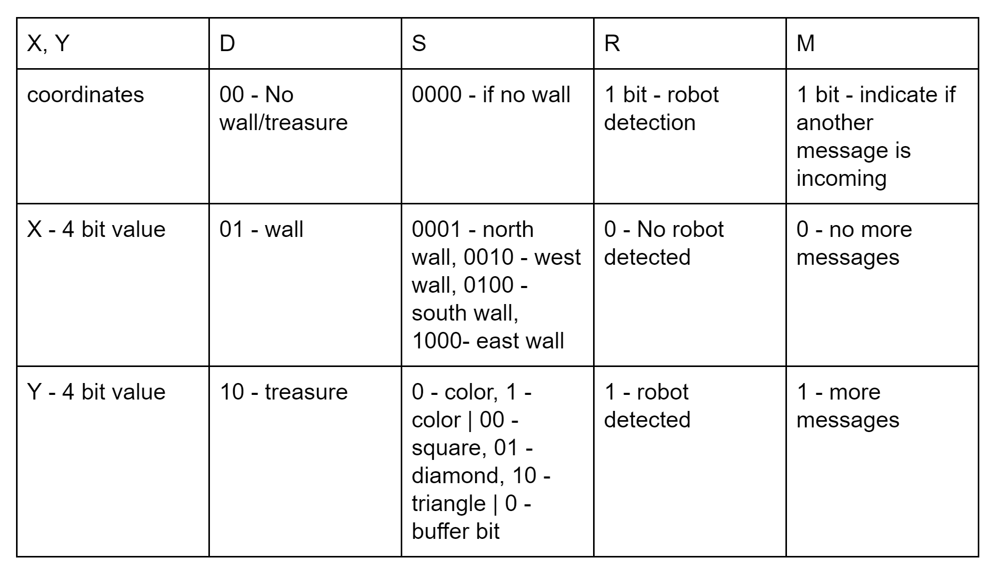

Objective
The objective of this lab is is two-fold: to implement the radio component for our robot and to integrate all of our work from previous labs and milestones. By the end of the lab, we hope to get have our robot start on a tone, navigate a maze autonomously, and send maze information wirelessly to a base station.
Radio Group
Materials
• 2 Nordic nRF24L01 and transceivers• 2 Arduino Unos
• 2 radio breakout boards with headers
The Lab
Getting Started
First, we connected the arduinos to the radios. The below setup is how we connected them, where the GND pin was the squared pin on the transceivers:
Since we had two non-original arduinos, the radios had to be powered using the dc power supply. We used the provided code to determine that both radios were able to transmit and recieve information. Once this was confirmed, we adjusted the code to send out maze information.
Sending Maze Information Between Arduinos
How we encoded the Maze Imformation
We encoded the maze information as shown above. The first four bits were the x-coordinate values and the second 4 bits were the y-coordinate, accounting for values up to 9. The second two bits are the data bits, which for now only tells if there is a wall or trasure. The Select bits have 4 bits to tell multiple information depending on the data bits. This is further clarified in the table below. There is one bit for whether a robot is seen(1) or not seen(0) and one bit for if there is an other packet of informatino coming (1).
Simulating Our Robot
We simulated the robot by setting up 4 arrays, each one containg the information that the robot would send at each intersection. Then in the main loop, we made a for loop, which would take element i from each array and bit shift them in accordance to our maze data encoding scheme and send it to the base station arduino. A working video of this is shown below:
**************VIDEO********************Base Station-to-GUI Transmission
On the GUI side, the information that was recieved was broken down into the basic elements and then a series of print statements ending with a println() would update the GUI, adding the walls and the red dot for the simulated robot's current location.
Robot Group
Materials
• Your robot and all the code from the past labs• Decoy
• 660Hz tone generator
• Walls to make the following maze setup
The Lab
Starting on a Tone and Exploring the Maze
The integrated the mircrophone circuit code from lab 2 with the main code. In the video below you will see our robot waiting for the 660 Hz tone before starting.
_______________________________VIDEO_____________________________________________